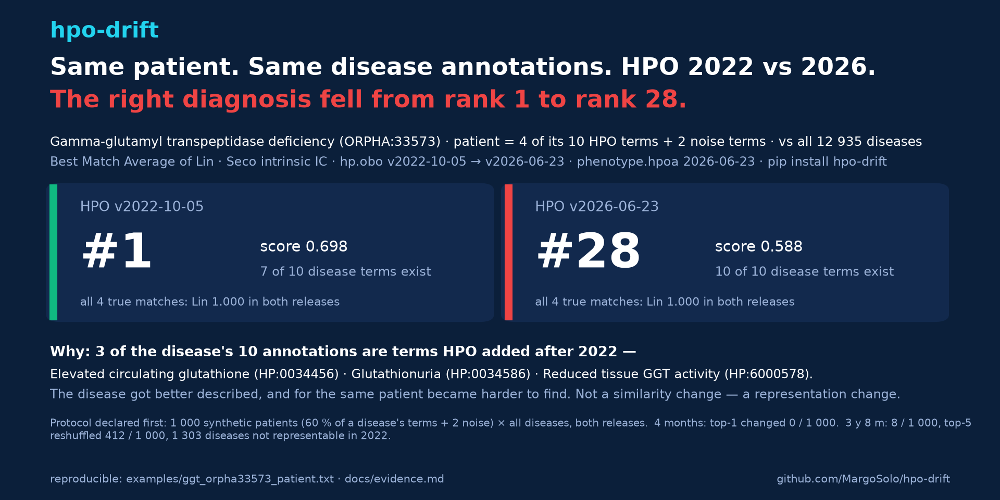

hpo-drift


Same patient, same disease annotations, different HPO release — does the diagnosis move? hpo-drift computes your phenotype similarity twice, once per HPO release, and shows what changed and why.
pip install hpo-drift
Three commands
1 · Rank diseases for a patient in two releases.
hpo-drift rank-diseases --query examples/ggt_orpha33573_patient.txt --hpoa phenotype.hpoa --old v2022-10-05 --new v2026-06-23
| disease | score old → new | rank old → new |
| Gamma-glutamyl transpeptidase deficiency (ORPHA:33573) | 0.698 → 0.588 | 1 → 28 |
| Infantile choroidocerebral calcification (ORPHA:1313) | 0.677 → 0.674 | 2 → 1 |
hpo-drift profiles --query patient.txt --target disease.txt --old v2022-10-05 --new v2026-06-23
Query terms used 6 → 6 of 6; target 7 → 10 of 10. ← 3 of the disease's terms did not exist in 2022
hpo-drift report --old v2026-02-16 --new v2026-06-23 --terms my_terms.txt
term label status parents IC old → new
HP:0002199 Hypocalcemic seizures unchanged −HP:0002901 1.000 → 1.000
pair Lin old → new Δ MICA old → new
Hypocalcemic seizures ↔ Hypocalcemia 0.941 → 0.000 −0.941 HP:0002901 → HP:0000118
lint (a CI gate for a phenotype spreadsheet: label matches, obsolete ids, unknown tokens), cohort + rank (every disease profile in phenotype.hpoa, no size cutoff). Releases are pulled from the official HPO GitHub assets, verified against their published SHA-256, and cached. Any tag like v2026-06-23 works.

What we found
Protocol first, then numbers (docs/evidence.md): 500 synthetic patients per run, each 60 % of one disease's annotations plus 2 noise terms, drawn from all 12 935 disease profiles, ranked against every disease in both releases.
| 4 months (v2026-02 → v2026-06) | 3 y 8 m (v2022-10 → v2026-06) | |
|---|---|---|
| top-1 diagnosis changed | 0 of 1 000 | 8 of 1 000 |
| top-5 list reshuffled | 93 of 1 000 | 412 of 1 000 |
| diseases not representable in the old release | 0 | 1 303 of 12 935 |
Over four months the ranking held. Over four years one patient in a hundred loses its top-1, two in five get a different differential, and a disease in ten cannot be queried with the old ontology at all — its annotations use terms that did not exist yet. The mechanism is usually not a similarity change but a representation change: gamma-glutamyl transpeptidase deficiency drops from rank 1 to 28 for the same patient because 3 of its 10 annotations are 2023+ terms. Underneath, the raw pairwise scores are never stable: every one of the 11 947 rankable disease profiles had at least one Lin score move even across the four-month interval.
So: pin the HPO release and the phenotype.hpoa version in Methods, match on IDs, and run rank-diseases across the releases your cohort spans before you call a ranking reproducible.
Documentation
Tutorial · Methods (intrinsic IC, Best Match Average, resolution across releases, cohort semantics, provenance) · Evidence (all sweeps, tables, mechanism) · Changelog · site: margosolo.github.io/hpo-drift
Companion tools
hpotools — HPO in R · awesome-human-phenotype-ontology — link-verified list of HPO tools.
Cite
DOI (all versions): 10.5281/zenodo.22286170 — each release has its own version DOI on that page; cite the version you ran (hpo-drift --version).
Soloshenko M. hpo-drift: quantifying the effect of HPO release changes on phenotype-similarity results. 2026. MIT License.